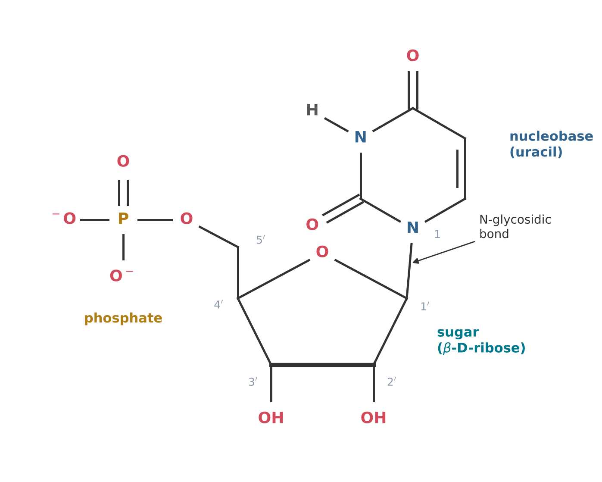
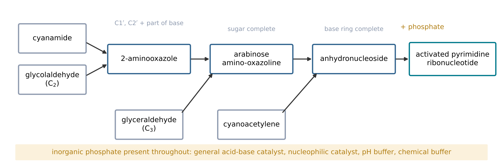
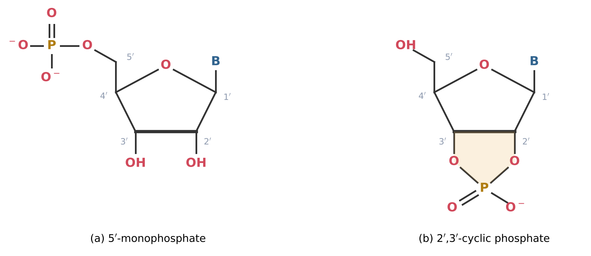
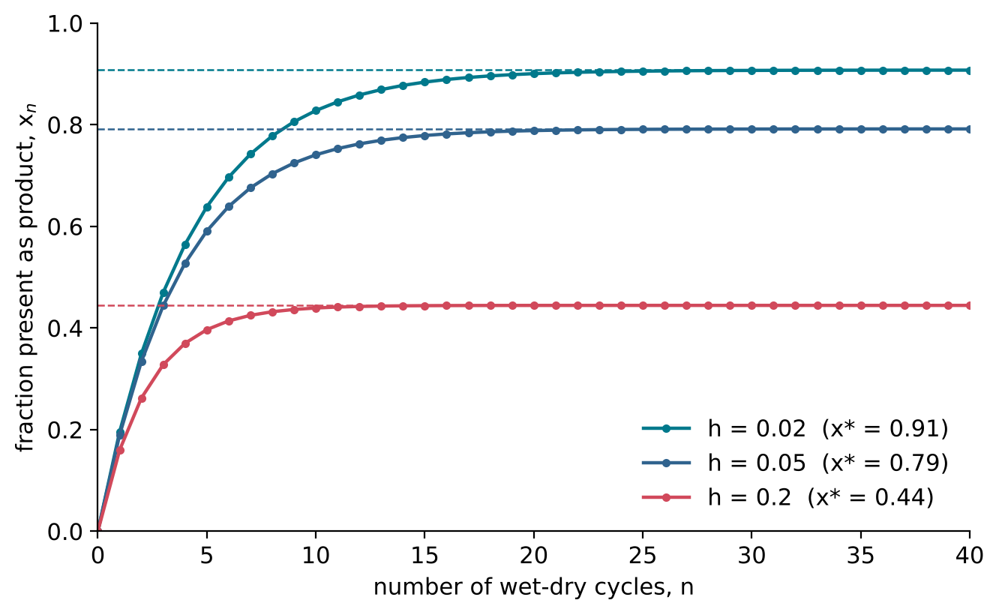

5 Assembling Nucleotides
Learning objectives
After reading this chapter you should be able to:
- Describe the structure of a ribonucleotide, distinguish a nucleoside from a nucleotide, and use the primed numbering of the ribose ring.
- Explain why joining a free nucleobase to free ribose is inefficient for purines and fails for the pyrimidines of RNA.
- Outline the synthesis of activated pyrimidine ribonucleotides by Powner, Gerland and Sutherland, and the routes to purine nucleosides through formamidopyrimidines.
- Explain where and how phosphate is attached to a nucleoside, and why the 2\('\),3\('\)-cyclic phosphate is an activated form.
- Explain how the chirality of ribose affects the copying of nucleotide chains, and how wet-dry cycles shift condensation equilibria.
5.1 Anatomy of a nucleotide
Nucleosides and nucleotides
A nucleoside is a nucleobase (Section 4.5) joined to a sugar. In a ribonucleoside, the sugar is D-ribose in its furanose form (Section 4.4), and the bond joins C1 of the ribose to a ring nitrogen of the base: N9 in the purines and N1 in the pyrimidines. This carbon-nitrogen bond is called the N-glycosidic bond. A nucleotide is a nucleoside that carries one or more phosphate groups (Section 4.6), usually on the hydroxy group at C5 of the ribose. A nucleotide therefore has three parts: a nucleobase, a sugar and a phosphate (Figure 5.1).
To distinguish the atoms of the sugar from those of the base, the carbon atoms of ribose in a nucleoside are numbered with a prime: C1\('\) to C5\('\). The N-glycosidic bond joins C1\('\) to the base; the hydroxy groups of ribose are on C2\('\), C3\('\) and C5\('\); and the ring oxygen links C1\('\) and C4\('\).
The four ribonucleosides of RNA are adenosine, guanosine, cytidine and uridine. The corresponding nucleotides with one phosphate on C5\('\) are the nucleoside 5\('\)-monophosphates, abbreviated AMP, GMP, CMP and UMP. Their formulas follow from the condensation reactions that join their parts (Table 5.1). For example, adenine (C5H5N5) and ribose (C5H10O5) combine with the loss of one molecule of water to give adenosine, C10H13N5O4; adenosine and phosphoric acid (H3PO4) combine with the loss of a second molecule of water to give AMP, C10H14N5O7P.
| Base | Nucleoside | Formula | M (g mol−1) | 5\('\)-Monophosphate | Formula | M (g mol−1) |
|---|---|---|---|---|---|---|
| Adenine | Adenosine | C10H13N5O4 | 267.25 | AMP | C10H14N5O7P | 347.22 |
| Guanine | Guanosine | C10H13N5O5 | 283.24 | GMP | C10H14N5O8P | 363.22 |
| Cytosine | Cytidine | C9H13N3O5 | 243.22 | CMP | C9H14N3O8P | 323.20 |
| Uracil | Uridine | C9H12N2O6 | 244.20 | UMP | C9H13N2O9P | 324.18 |
Configuration at C1\('\)
The formation of the N-glycosidic bond creates a new stereocentre at C1\('\). The base can lie on the same side of the furanose ring as the CH2OH group at C4\('\), or on the opposite side. The two forms are called the \(\beta\) and \(\alpha\) anomers, respectively. All the nucleosides of RNA are \(\beta\)-D-ribonucleosides: the base is on the same face of the ring as C5\('\). The \(\alpha\) anomers are diastereomers of the natural nucleosides, not enantiomers, and have different properties. A prebiotic synthesis must therefore control not only which sugar and which base are joined, but also the configuration of the new bond.

5.2 The glycosidic bond
A condensation in water
The N-glycosidic bond is formed by a condensation (Section 4.2): the hydroxy group on C1\('\) of ribose and a hydrogen atom on the ring nitrogen of the base are lost as water. Like other condensations, it is disfavoured in water (Equation 4.2), so that the direct reaction of a base with ribose in dilute solution gives little product. The obvious remedy, the removal of water by drying and heating, was explored in early work.
Fuller, Sanchez and Orgel reported a synthesis of purine nucleosides from purines and ribose (Fuller, Sanchez, and Orgel 1972), but this and later attempts showed the reaction to be inefficient. The underlying difficulty was summarised by Powner, Gerland and Sutherland: ribose is difficult to form selectively, and the addition of nucleobases to ribose is inefficient in the case of the purines and does not occur at all in the case of the canonical pyrimidines, cytosine and uracil (Powner, Gerland, and Sutherland 2009).
Why the pyrimidines fail
The ring nitrogen of a pyrimidine that must form the glycosidic bond, N1, is a poor nucleophile, because its lone pair is delocalised into the adjacent carbonyl group and the ring. The N1–C1\('\) bond is therefore not formed in detectable amounts (Powner, Gerland, and Sutherland 2009), while ribose itself decomposes over the same period (Section 4.4). This combination of a slow desired reaction and faster competing reactions is a recurring form of the selectivity problem of Section 4.7.
The failure of the direct route led to two different strategies. The first constructs the glycosidic bond before the nucleobase is complete, so that the nitrogen that forms the bond is part of a more reactive intermediate. This strategy underlies the pyrimidine synthesis of Section 5.3. The second modifies the base, as in the purine routes through formamidopyrimidines described in the same section.
5.3 Building the nucleotide in pieces
The strategy
If the complete base and the complete sugar do not combine, the nucleotide can be assembled from smaller pieces, each containing part of the base and part of the sugar. In this approach, the bond that will become the N-glycosidic bond is formed early, between fragments in which the nitrogen atom is still reactive, and the rings of the base and the sugar are completed afterwards. Anastasi and co-workers showed that precursors of nucleosides can be assembled directly from units of two and three carbon atoms (Anastasi et al. 2006), and this work led to the synthesis of activated pyrimidine ribonucleotides described below.
Powner, Gerland and Sutherland reported a synthesis of activated pyrimidine ribonucleotides that bypasses both free ribose and the free nucleobases (Powner, Gerland, and Sutherland 2009). The starting materials were cyanamide, cyanoacetylene, glycolaldehyde, glyceraldehyde and inorganic phosphate, all regarded as plausible prebiotic feedstock molecules (Section 3.6, Section 4.5).
The sequence passes through two key intermediates (Figure 5.2). Cyanamide and glycolaldehyde give 2-aminooxazole, a small heterocycle that contains the future C1\('\) and C2\('\) of the sugar together with the nitrogen and carbon atoms that will become part of the base. Reaction of 2-aminooxazole with glyceraldehyde, which supplies the remaining three carbon atoms of the sugar, gives a pentose amino-oxazoline; the arabinose isomer, arabinose amino-oxazoline, is carried forward. Cyanoacetylene then adds to complete the pyrimidine ring, giving an anhydronucleoside. Finally, phosphate is attached and the anhydronucleoside is converted into the activated pyrimidine nucleotide (Powner, Gerland, and Sutherland 2009).
Phosphate is incorporated only at the last stage, but its presence from the start is essential: it controls three of the earlier reactions by acting as a general acid-base catalyst, a nucleophilic catalyst, a pH buffer and a chemical buffer (Powner, Gerland, and Sutherland 2009). The authors concluded that prebiotic syntheses should be studied in mixed chemical systems, in which the reactants for one step can also control others (Powner, Gerland, and Sutherland 2009).
The 2009 synthesis changed the questions asked about the origin of RNA. It showed that the failure of the direct coupling of base and sugar need not exclude RNA as the first genetic material, and that the stepwise order in which chemists assemble a molecule need not be the order in which it is formed prebiotically. It also left problems: it produces the pyrimidine nucleotides only, it requires the reactants to be added in a specific order, and its starting materials must be supplied in relatively pure form.

Routes to the purines
The purines require a different approach. Becker and co-workers described a high-yielding and strictly regioselective route to purine nucleosides (Becker et al. 2016). In this route the purine is not formed first: instead, formamidopyrimidines, pyrimidines that carry the atoms of the future five-membered ring in open form, react with the sugar, and the five-membered ring is closed afterwards. The condensation gives the natural N9 nucleosides selectively (Becker et al. 2016).
The same group later reported a synthesis of the pyrimidine nucleosides from small molecules and ribose, driven solely by wet-dry cycles, and compatible with the purine synthesis, so that all four of the canonical bases could form under one set of conditions (Becker et al. 2019). A key starting material, hydroxylamine or hydroxylamine disulfonate, can form under plausible conditions in the early atmosphere (Becker et al. 2019). In the presence of minerals containing phosphate, the 5\('\)-monophosphates and 5\('\)-diphosphates of the nucleosides also formed selectively in one-pot reactions (Becker et al. 2019).
These two families of route, the cyanamide chemistry of Sutherland and co-workers and the formamidopyrimidine chemistry of Carell and co-workers, differ in their starting materials and conditions. In their published forms, both involve steps in which the experimenter supplies reagents in a controlled order, and how they could proceed together in one natural setting is an open question.
5.4 Phosphorylation of nucleosides
Three hydroxy groups
A ribonucleoside has three hydroxy groups, at C2\('\), C3\('\) and C5\('\), any of which can be phosphorylated. In RNA, the phosphate diester joins C3\('\) of one nucleotide to C5\('\) of the next (Section 4.6). A prebiotic phosphorylation that attaches phosphate at random would give a mixture of 2\('\)-, 3\('\)- and 5\('\)-monophosphates and of products with more than one phosphate group. The position of phosphorylation is therefore a further question of selectivity (Section 4.7).
The 2\('\),3\('\)-cyclic phosphate
When a phosphate group is attached to C2\('\) or C3\('\), it can condense a second time with the neighbouring hydroxy group, forming a five-membered ring that contains C2\('\), C3\('\), two oxygen atoms and the phosphorus atom. The product is the nucleoside 2\('\),3\('\)-cyclic phosphate (Figure 5.3). The ring is strained, and its opening releases free energy. The cyclic phosphate is therefore an activated form of the nucleotide, able to transfer its phosphate to the 5\('\)-hydroxy group of another nucleotide and so to form a phosphodiester bond without an external source of energy. The activated pyrimidine ribonucleotides of Powner, Gerland, and Sutherland (2009) are cyclic phosphates of this kind.

Sources of the phosphate
The approaches to prebiotic phosphorylation introduced in Section 4.6 apply to nucleosides. Schreibersite attaches phosphate groups to adenosine and uridine in water (Gull et al. 2015). Diamidophosphate phosphorylates nucleosides and nucleotides in water or a paste without an additional condensing agent, and under the same conditions forms short chains of nucleotides (Gibard et al. 2018). In the wet-dry cycle chemistry of Becker et al. (2019), phosphate-containing minerals gave 5\('\)-mono- and diphosphates selectively. In each case, the conditions that favour phosphorylation are those that reduce the activity of water: drying, pastes, or the use of an activated phosphorus reagent.
5.5 Chirality and the copying of nucleotides
D-ribose in every nucleotide
Each ribonucleotide contains four stereocentres in its sugar, at C1\('\), C2\('\), C3\('\) and C4\('\), and all the nucleotides of an RNA molecule have the same configuration at each of them: they are \(\beta\)-D-nucleotides. The mirror image of a \(\beta\)-D-nucleotide is a \(\beta\)-L-nucleotide. Because syntheses from achiral feedstock molecules give racemates (Section 4.1), a prebiotic nucleotide synthesis that begins with achiral or racemic materials will give equal amounts of D and L nucleotides unless an asymmetric influence acts. In the synthesis of Powner, Gerland, and Sutherland (2009), for example, glyceraldehyde is the only chiral starting material; if it is racemic, so are the products.
Enantiomeric cross-inhibition
The importance of homochirality for RNA appears when nucleotides are joined into chains on a template. A template is an existing chain whose sequence directs the order in which monomers are joined; template-directed copying is the subject of Chapter 8. Joyce and co-workers studied the template-directed formation of chains of guanosine nucleotides on a template of polycytidylic acid, poly(C), using activated monomers of either one or both handedness (Joyce et al. 1984). Their results showed chiral selection: when nucleotides of the opposite handedness were present, they were incorporated at the end of a growing chain and blocked further growth (Joyce et al. 1984). This effect, called enantiomeric cross-inhibition, means that copying is inefficient in a racemic mixture of nucleotides.
Enantiomeric cross-inhibition is both a problem and a possible clue. It shows that a racemic pool of nucleotides is a poor starting point for RNA. But it is also a form of the mutual inhibition between enantiomers in Frank’s model (Section 4.7), and so a possible mechanism of amplification once an excess of one enantiomer exists.
5.6 Condensation in water and wet-dry cycles
Water as a product
Every bond that joins the parts of a nucleotide, and every bond that joins nucleotides into chains, is formed by a condensation that releases water. For a condensation of the form
\[ \mathrm{A{-}OH} + \mathrm{H{-}B} \rightleftharpoons \mathrm{A{-}B} + \mathrm{H_2O} \]
the equilibrium constant can be written in terms of the activity of water, \(a_{\mathrm{w}}\):
\[ K = \frac{[\mathrm{A{-}B}]\, a_{\mathrm{w}}}{[\mathrm{A{-}OH}][\mathrm{H{-}B}]} \tag{5.1}\]
In dilute solution, \(a_{\mathrm{w}}\) is close to 1, and with K small (Section 4.2) the ratio of product to reactants is small. The activity of water measures its effective concentration relative to pure water; it is reduced when water evaporates and solutes become concentrated, or when the reaction takes place in a film, a paste or the pores of a mineral. At constant K, a tenfold reduction in \(a_{\mathrm{w}}\) increases the equilibrium ratio of product to reactants tenfold. Drying also increases the concentrations of the reactants themselves, which increases the rate of the condensation and, for bimolecular reactions, the fraction of reactants converted.
Wet-dry cycles
A wet-dry cycle alternates between a wet phase, in which reactants are dissolved and transported, and a dry phase, in which condensations are favoured. Such cycles occur naturally at the margins of ponds and in hot-spring settings, where water evaporates and is replenished (Section 3.7) (Damer and Deamer 2020). They combine two requirements that cannot be met at the same time: mobility of the reactants, which requires water, and condensation, which requires its removal. The synthesis of nucleosides by Becker et al. (2019) was driven solely by such cycles.
A simple model shows how cycling accumulates a product. Suppose that, in each dry phase, a fraction f of the remaining reactant is converted into a condensation product, and that in each wet phase a fraction h of the product is hydrolysed back to the reactant. If xn is the fraction of material present as product after n cycles,
\[ x_{n+1} = (1-h)\,[\,x_n + f(1 - x_n)\,] \tag{5.2}\]
which approaches the steady-state value x* = f(1 − h)/(f + h − fh) after many cycles (Figure 5.4). With f = 0.2 and h = 0.05, for example, x* = 0.19/0.24 \(\approx\) 0.79. The product accumulates to a high fraction even though each dry phase converts only a fifth of the reactant, provided that hydrolysis in the wet phase is slow compared with condensation in the dry phase. If hydrolysis is fast, the steady state is low however many cycles occur. The model is schematic: in real cycles the products also include side products and decomposition products, which accumulate as well.

Summary
- A nucleoside is a nucleobase joined by an N-glycosidic bond from N9 (purines) or N1 (pyrimidines) to C1\('\) of \(\beta\)-D-ribofuranose; a nucleotide carries in addition one or more phosphate groups, usually on C5\('\).
- The direct condensation of a free base with free ribose is inefficient for the purines and does not occur for the canonical pyrimidines.
- Powner, Gerland and Sutherland (2009) made activated pyrimidine ribonucleotides from cyanamide, cyanoacetylene, glycolaldehyde, glyceraldehyde and phosphate, through 2-aminooxazole, arabinose amino-oxazoline and an anhydronucleoside, bypassing free ribose and free bases. Carell and co-workers developed routes to purine nucleosides through formamidopyrimidines and a wet-dry cycle synthesis compatible with all four bases.
- Phosphorylation can occur at C2\('\), C3\('\) or C5\('\); the 2\('\),3\('\)-cyclic phosphate is an activated form of the nucleotide.
- Nucleotides of the wrong handedness block template-directed chain growth (enantiomeric cross-inhibition), so copying requires homochiral nucleotides.
- Condensations are favoured when the activity of water is low. Wet-dry cycles combine mobility in the wet phase with condensation in the dry phase, and can accumulate products when hydrolysis is slow.
Exercises
- Write the equation for the condensation of cytosine with ribose to give cytidine, and verify the formula of cytidine in Table 5.1.
- Calculate the molar mass of guanosine 5\('\)-monophosphate from the abridged standard atomic weights, and compare it with Table 5.1.
- How many stereocentres does the ribose of a nucleoside contain? How many stereoisomers of adenosine are possible in principle?
- Explain the difference between the \(\alpha\) and \(\beta\) anomers of a nucleoside. Are they enantiomers?
- In the synthesis of Powner, Gerland, and Sutherland (2009), which starting materials supply the atoms of the sugar, and which supply the atoms of the base?
- Phosphate is incorporated into the nucleotide only in the final step of the 2009 synthesis. Explain why its presence from the start was nevertheless essential.
- Draw the 2\('\)-, 3\('\)- and 5\('\)-monophosphates of uridine, and the 2\('\),3\('\)-cyclic phosphate. Which of them is activated, and why?
- Explain, with reference to Equation 5.1, why a paste or a film of reactants favours phosphorylation more than a dilute solution.
- Explain how enantiomeric cross-inhibition could both hinder and help the origin of homochiral RNA.
- Using Equation 5.2, derive the expression for the steady-state fraction x* by setting xn+1 = xn.
- For f = 0.2, calculate x* for h = 0.02 and h = 0.2. How many cycles are needed in each case for x to reach 90 percent of x*, starting from x0 = 0?
- Name two simplifications of the model of Equation 5.2, and explain how each would change the predicted accumulation of product.